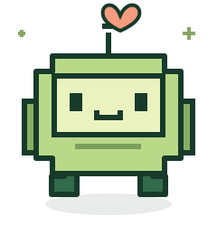

Find your own rhythm.
Set a focus session that fits your day. Snooze when you need another moment, or take a break whenever you’re ready.

pixel buddy.Get your buddy ↗A tiny companion with a big reminder:
you deserve a little break, too.
Stay in your flow, stretch between sessions, and remember that glass of water. Pixel Buddy makes taking care of yourself feel a little more friendly.
Good habits don’t need to be complicated.
Your buddy keeps the little things close.
Set a focus session that fits your day. Snooze when you need another moment, or take a break whenever you’re ready.
Gentle break reminders and optional desktop activity monitoring help your timer follow your workday.
Bring your own GIF, image, or video to the desktop app. Pick a color, choose a sound, and keep track of your water.
Let’s make a little space to focus.
Interactive preview · your desktop app has its own timers.
Choose the download for your device. Desktop builds come straight from GitHub Releases.
Open Pixel Buddy, choose your focus routine, and adjust reminders to suit your day.
Keep your buddy nearby. Work, rest, sip, repeat. Your settings stay on your device.
No checkout. No email gate.
Just a small gift for your everyday.
Checking the latest GitHub release…
Desktop companion · x64
Installer · .exeApple silicon & Intel
Disk image · .dmgDesktop companion · x64
AppImage & DebianDownload the latest release with Bash. The script downloads a file; you choose when to install it.
All downloads are hosted on GitHub. Browse every release ↗ · MIT license ↗
Yes. Pixel Buddy is free and open source under the MIT license. You can use it, share it, and make it your own.
The app stores your preferences, media, and daily counters locally. There is no account or analytics service. This website contacts GitHub to check available releases.
Desktop builds are currently unsigned. macOS may ask you to allow the app in Privacy & Security; Windows may show SmartScreen. Download only from this project's releases.
On macOS, optional smart monitoring uses Accessibility permission. You can turn monitoring off and use regular timers instead.
Absolutely. Share the website or GitHub release link so they can choose the right version. Found a bug or have an idea? Tell us on GitHub.